Adım Ölçmek, Pedometre
Cep telefonlarının çoğunda artık ivmeölçer (acceloremeter) algılayıcılar var; bu algılayıcılar telefonun $x,y,z$ eksenlerini baz alarak tüm eksenlerde ne kadar ivme etkisi olduğunu ölçüyorlar. Bu etkilerden en büyüklerinden biri tabii ki yerçekimi, telefonda hiçbir hareket olmasa bile telefonu tutuşa göre 9.8 metre / $s^2$'lik bir ivme tek ya da tüm eksenlere dağılmış olarak ölçülecektir [4]. Yürürken, adım atarken meydana çıkan yukarı ve aşağı yönde kuvvet uygulaması da ivmeölçerlerle yakalanır. Bu ölçümleri kullanarak acaba atılan adım sayısını bulamaz mıyız? [5]'deki uygulamayı kullanarak alınan ölçümlere bakalım,
import pandas as pd
dfacc = pd.read_csv('acc.txt',header=None,sep='\s+')
print dfacc.head()
0 1 2 3
0 1493818386218 -0.147100 6.972528 6.707748
1 1493818386422 -0.215746 7.001948 6.854848
2 1493818386610 -0.304006 7.041174 6.697942
3 1493818386812 -0.304006 7.050981 6.884268
4 1493818387008 -0.225553 7.011754 6.943108
steps1 = np.sqrt(np.sum(dfacc[[1,2,3]]**2, axis=1))
steps2 = steps1 - 9.8
steps2[:200].plot()
plt.savefig('compscieng_app40walk_01.png')
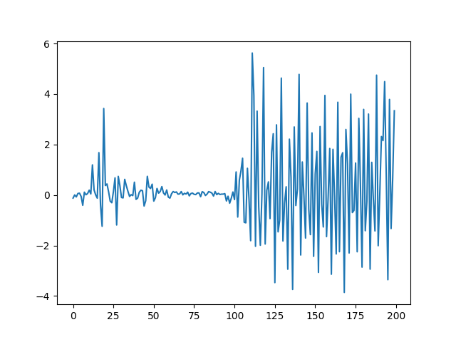
Üç eksendeki ivme ölçümünün normalize ettik (karelerinin toplamının karekökü),
$$ r = \sqrt{r_x^2 + r_y^2 + r_z^2}$$
Daha önce belirtildiğimiz gibi telefonun duruşu değişik şekillerde olabilir, ve yerçekiminde olduğu gibi bu ölçümler üç eksene dağılmış olacaktır. Bu üç ölçümü birleştirerek esas bizi ilgilendiren hesaba daha yaklaşmış olmayı umduk.
Sonuçlar fena değil, baştaki sıfıra yakın bölgede hiç hareket etmiyorduk mesela, ve ivme hesabı burada ufak bir değer gösteriyor. Yapılan bir ek işlemden daha bahsedelim, 9.8'lik yerçekimi ivmesini karekökten çıkarttık çünkü yerçekimini ölçmekle de ilgilenmiyoruz (hep aynı zaten), bu değeri çıkartarak yine bizi ilgilendiren veriyi daha net şekilde görebileceğimizi umduk. Altta bu çıkartma öncesi ve sonrasında yapılan Fourier analizine göre yerçekimi çıkartılmış verinin ilgilendiğimiz frekansları daha net gösterdiği belli oluyor.
import sys; sys.path.append('../compscieng_1_32')
import filt
f=plt.figure()
filt.plotSpectrum(steps1, 6)
plt.savefig('compscieng_app40walk_02.png')
f=plt.figure()
filt.plotSpectrum(steps2, 6)
plt.savefig('compscieng_app40walk_06.png')
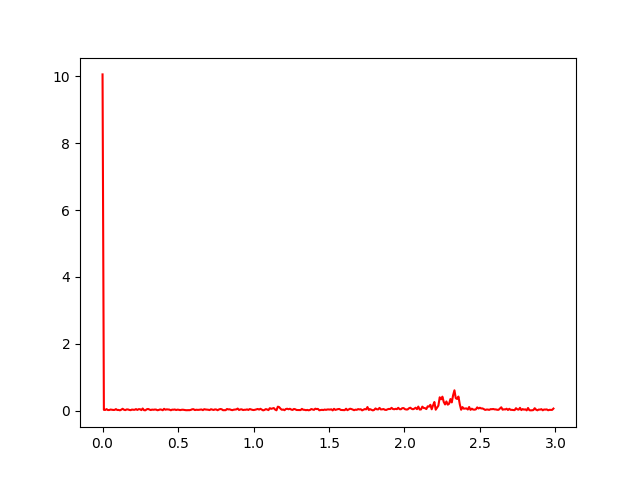 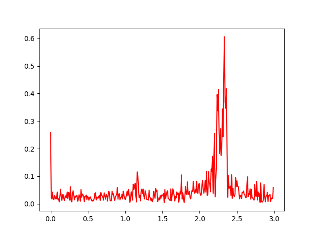
1 Hz. ve 2 Hz. seviyesindeki frekanslar ilginç, bunlar saniyede bir ve iki adıma tekabül ediyor olmalılar.
Adım saymak için zaman serilerinde tepe / uç nokta bulabilen kodlar
kullanacağız, peakutils altında bu kodları görüyoruz; bu kodlarla
belli eşik, minimum mesafe değerlerini belirleyerek bir zaman serisindeki
uç noktaları bulabiliyoruz.
import peakutils
idx = peakutils.indexes(steps2, thres=0.1, min_dist=3)
print len(idx), u'tepe noktası var'
plt.plot(steps2)
plt.plot(idx,steps2[idx],'rd')
plt.savefig('compscieng_app40walk_03.png')
89 tepe noktası var
Bu noktaların alt bölümü de var tabii, bu nihai sayı için üstteki sonucu iki ile çarpabiliriz. Hesap fena değil, bu deney için 170 adım atmıştık.
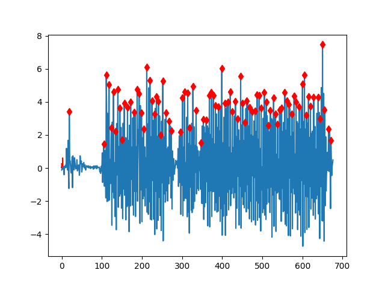
Tepe bulmaktaki farklı parametre etkilerini de gösterelim. Önce gürültülü, iki büyük tepeden oluşan bir yapay veri üretelim,
import peakutils
np.random.seed(0)
centers = (30.5, 72.3)
x = np.linspace(0, 120, 121)
y = peakutils.gaussian(x, 5, centers[0], 3) + \
peakutils.gaussian(x, 7, centers[1], 10) + \
np.random.rand(x.size)
Şimdi farklı parametrelerle tepe noktalarını bulalım,
plt.figure()
plt.plot(x, y)
indexes = peakutils.indexes(y, thres=0.5, min_dist=30)
plt.plot(x[indexes], y[indexes], 'rd')
plt.savefig('compscieng_app40walk_04.png')
plt.figure()
plt.plot(x, y)
indexes = peakutils.indexes(y, thres=0.5, min_dist=3)
plt.plot(x[indexes], y[indexes], 'rd')
plt.savefig('compscieng_app40walk_05.png')
plt.figure()
plt.plot(x, y)
indexes = peakutils.indexes(y, thres=0.1, min_dist=5)
plt.plot(x[indexes], y[indexes], 'rd')
plt.savefig('compscieng_app40walk_07.png')
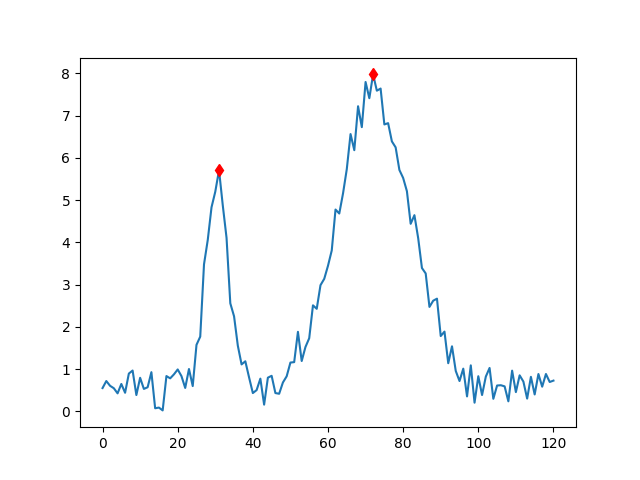 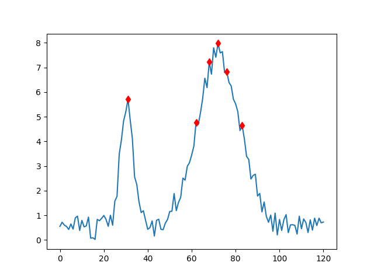 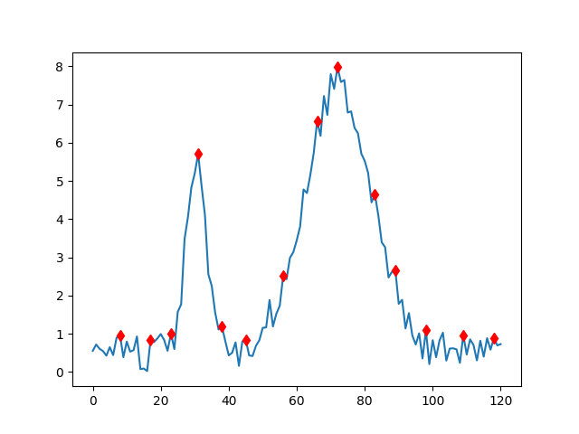
Parametre thres dikey bir eşik değeri tanımlıyor, en yüksek nokta
1.0 olacak şekilde. Mesela yarım seviyede minimal bir yükseklik eşik değeri
0.5 ile tanımlanabilir, o zaman sadece bu değer üstündeki noktalar tepe
olarak saptanacaktır. Yatay yönde ama bu sefer reel değer bazlı bir eşik
değeri min_dist ile verilir, bu durumda tepe noktaları arasında en
az bu kadar mesafe olması gerekir.
Yürüyüş Yönünü Bulmak
Cep telefonuyla, telefon hangi konumda olursa olsun (cepte, çantada, elde) hangi yöne yürüdüğümüzü nasıl buluruz? Bilim kurgu filmleri biz izleyicileri biraz şımarttı aslında -zamanda seyahat, istediği yere inen uzay gemileri, ışıktan hızlı seyahat- fakat cep telefonu ile yürüyüş yönünü hesaplamak 2014 civarına kadar hala tam, genel bir şekilde çözülmüş değildi. GPS işe yaramıyor mu? GPS kesin çözüm olabilirdi çünkü dünya üzerinde global kordinatları direk cihaza alıyoruz ve ardı ardına alınan ölçümler bir gidiş yönünü gösteriyor olurdu, fakat GPS şehir ortamında binalardan sinyal yansıması (multipath) problemi sebebiyle herhangi bir yönde birkaç yüz metre hatalı olabiliyor, ve kapalı alanlarda zaten hiç GPS sinyali alamıyoruz. Başka bir yöntemi kullanmamız gerekiyor.
Daha önce adım sayısında olduğu gibi ivmeölçer kullanımı akla gelecektir, ivmeölçer önemli, fakat bu algılayıcıların kaydettikleri veri yürüyüş sırasında pek çok diğer hareket ile karışmış halde. Sallanma, aşağı yukarı gidiş geliş gibi. Ayrıca ivmeölçerin kaydettiği telefon bazlı bir eksen sistemine göredir, bu sistem

Eğer telefonun ekranı bana tam dönük, yere dik şekilde tutup yürürsem ivmeölçer y kordinatında daha yüksek değerler kaydediyor mesela. Bu bilgiyi alıp telefonun bir diğer algılayıcısı elektronik pusula / manyetometre (magnetometer) üzerinden bir global yön bilgisine belki çevirebilirim, fakat pusula da tam güvenli değil, bu birleştirmeyi dikkatli yapmak lazım.
Birleştirme için Android ortamında rotasyon matrisi [3] bazlı bir yöntemi tavsiye edenler var; bu yönteme göre ivmeölçer ve pusula birleştirilip kamera kordinat sistemini dünya kordinat sistemine tercüme edecek bir matris hesaplanıyor. Fakat bu hesap hareketli ortamda tam güvenilir değil, ayrıca hesaplanan çok boyutlu bir ürün. Bu tür girift ara ürünler nihai çözümdeki hata ihtimalini daha arttırır, bize gereken tek bir yön sadece, tüm üç boyutlu eksenin bir diğer üç boyutlu eksene direk eşlemesine ihtiyaç yok. Bir diğer problem bu hesabın nasıl kullanılacağı... Mesela ivme hesaplarını rotasyon matrisi ile dünya kordinat sistemine çevirdik, şimdi kuzey-güney doğu-batı bağlamında ivlenmeyi "biliyoruz". Bu ivmelenmeyi bir kere sayısal entegrasyon ile hıza çevirip oradan yön elde edebilir miyiz? Ne yazık ki entegrasyon hassas bir hesaptır. Eğer olmayan yerde birkaç saniye bile fazla ivme ölçümü almışsak, hızda, yönde aşırı farklılıklar ortaya çıkabiliyor.
Daha sağlam çözüm için yürüyüşün ivmeölçere nasıl yansıdığını yakından incelemek gerekiyor, ki [1, 2]'deki araştırma aynen bunu yapmış.
Not: Bu alanda bir diğer yaklaşım veri bilimi, yapay öğrenim yaklaşımı. Eğer elde yeterince veri varsa, ham veri ve yürünen yön olarak, bu veriler denetimli eğitimde bir yapay öğrenme algoritmasina verilir ve algoritma aradaki ilişkiyi öğrenir. Hangi yaklaşımın nerede yeterli, kuvvetli olacağını anlamak tecrübeye bağlı. Bazen problemi elden geldiği kadar matematiksel olarak modellemek, temel fiziksel kavramlardan başlayarak tanımlamak daha iyi olur, bazen diğer yaklaşım daha kolay olabilir.
[1]'e göre insan yürüyüşü belli bölgelere ayrılabilir ve her bölgenin ivmeölçerde farklı bir yansıması vardır. İki büyük bölge duruş ve sallanış denebilecek konumlar; duruşta (aslında tam duruş değil, fakat senkronize hareket) bacak ve üst gövde aynı anda öne doğru gitmekte, sallanış ise bir bacağın arkadan öne doğru itilmesiyle üst gövdeden öne geçme anı.
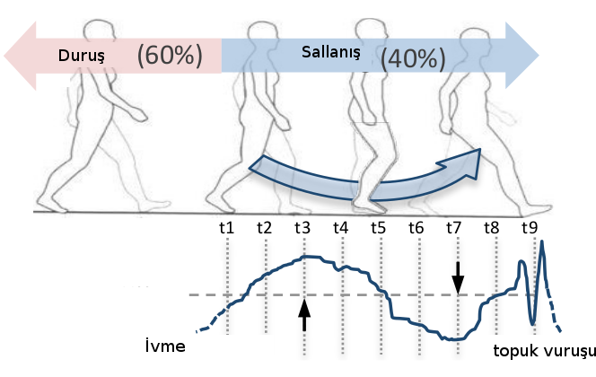
Sallanış bölgesinin ilk kısmında ivme pozitif, ikinci kısmında ise negatif. Ayrıca, diyelim ki sallanış $t_1,..,t_9$ zaman kesitlerini kapsıyor, ivme $t_3$'te maksimum, $t_5$'te sıfır, ve geriye doğru ters ivme (deceleration) $t_7$'de en üst noktasında.
Araştırmanın en önemli bulgusu şudur: güvenli bir şekilde ivmeölçere yansıyan ve yürüyüş yönü bilgisini taşıyan en iyi veri bölgesi topuk vuruşuna giden maksimum yavaşlamanın olduğu bir bölgedir, bunun için [1] önce ivme sinyalinde aşırı yüksek frekanslı sinyalleri eler, ardından sıfır geçiş anlarını bulur - bu noktalar sinyalin artıdan eksiye doğru geçiş yaptığı anlardır. Ardından sıfır geçiş ve tepe noktaları arasındaki topuk vuruşuna en yakın bölgeye odaklanılır, ve bu kesit çıkartılarak bütün üç eksenler üzerinden o bölgedeki ortalama alınır. Bu ortalama telefonun tüm eksenlerindeki ivme ölçüsü olacaktır, sonuç üç boyutlu bir vektör. Vektörün işaretini tersine çevirirsek (yavaşlama yönünün tersi) bu bize yürüyüş yönünü verecektir. Tekrar vurgulayalım, negatiflik, pozitiflik, sıfır geçiş irdelemeleri birleştirilmiş ivme verisinde, aranan bölge bulununca o bölgedeki ortalama üç eksendeki ivme verisinde hesaplanır.
Alttaki kodda bizim [5]'teki uygulama Steps'i kullanarak kaydettiğimiz verilerle yürüyüş yönü hesabını görüyoruz.
import pandas as pd, health
import scipy.linalg as lin
dir = './data/pots1/'
dfacc = pd.read_csv(dir + 'lacc.txt',header=None,sep='\s+')
fr=100; to=250
dfacc = np.array(dfacc)[fr:to]
t = dfacc[:,0] / 1e9
ax = dfacc[:,1]
ay = dfacc[:,2]
az = dfacc[:,3]
data = np.abs(ax) + np.abs(ay) + np.abs(az)
sample_rate = 25.0 # orneklem orani
cutoff = 5.0 # kac Hz yukarisini eleyelim
threshold = 0.1 # esik degeri
order=4 # butterworth filtresinin derecesi
# sallanis bolumunu kac kesite bolelim (ki ilgilendigimiz son kesit).
# [1]'e gore 4, altta 8 parcaya boluyoruz.
stride_fraction = 1.0/8.0
# Tum eksenlerdeki degerleri pozitifle ve topla
data = np.abs(ax) + np.abs(ay) + np.abs(az)
# ortalamayi cikar
data -= np.mean(data)
# Veri uzerinde alcak geciren (low-pass) Butterworth filtre islet,
# esik noktasi 5 Hz. Bu cok alcak bir deger degil, Huseyin Bolt bile
# saniyede 5 adimdan fazla atmiyordur herhalde
filtered = health.butter_lowpass_filter(data, sample_rate, cutoff, order)
# Pozitiften negatife gecis noktalarini bul
transitions = health.crossings_nonzero_pos2neg(filtered)
f=plt.figure()
plt.plot(filtered)
plt.plot(transitions,filtered[transitions],'rd')
plt.savefig('compscieng_app40walk_09.png')
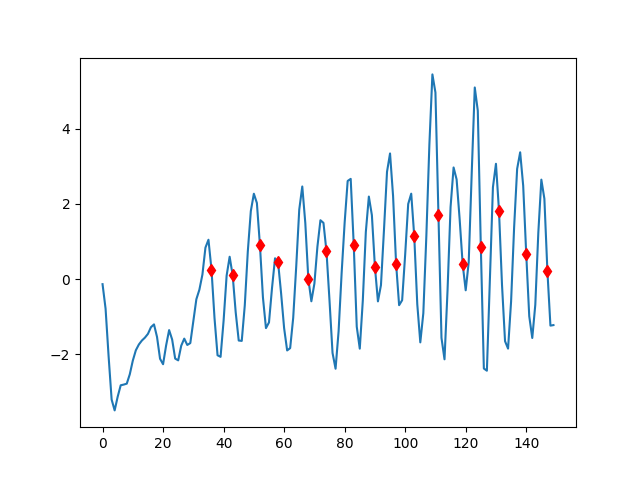
strike_indices_smooth = []
filter_threshold = np.abs(threshold * np.max(filtered))
for i in range(1, np.size(transitions)):
segment = range(transitions[i-1], transitions[i])
imax = np.argmax(filtered[segment])
if filtered[segment[imax]] > filter_threshold:
strike_indices_smooth.append(segment[imax])
f=plt.figure()
plt.plot(filtered)
plt.plot(strike_indices_smooth,filtered[strike_indices_smooth],'rd')
plt.plot(transitions,filtered[transitions],'gx')
plt.savefig('compscieng_app40walk_10.png')
# Tepe noktalari arasinda kac veri noktasi oldugunu FFT'nin reel kismini
# kullanarak hesapla
interpeak = health.compute_interpeak(data, sample_rate)
decel = np.int(interpeak / 2)
# Puruzlestirilmis verinin maksimum noktalarina yakin olan maksimum
# noktalarini bul
strike_indices = []
for ismooth in strike_indices_smooth:
istrike = np.argmax(data[ismooth - decel:ismooth + decel])
istrike = istrike + ismooth - decel
strike_indices.append(istrike)
strikes = np.asarray(strike_indices)
strikes -= strikes[0]
strikes = strikes / sample_rate
f=plt.figure()
plt.plot(data)
plt.plot(strike_indices,data[strike_indices],'rd')
plt.savefig('compscieng_app40walk_11.png')
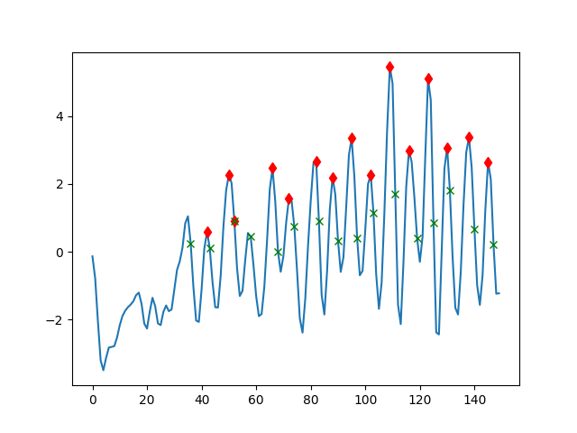
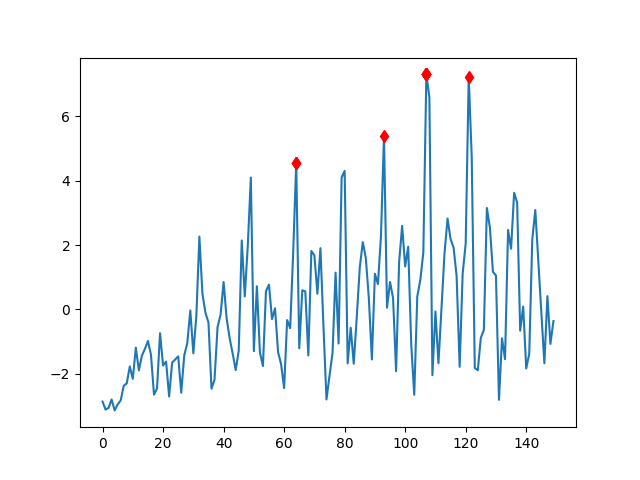
decel = np.int(np.round(stride_fraction * interpeak))
# ters ivmenin oldugu bolgede ortalama al, sonuc uc boyutlu vektor
vectors = []
for ipeak in strike_indices:
decel_vectors = np.asarray([[ax[i], ay[i], az[i]]
for i in range(ipeak - decel, ipeak)])
vectors.append(np.mean(decel_vectors, axis=0))
# ve isareti tersine cevir
direction = -1 * np.mean(vectors, axis=0)
# Birim vektor haline getir / normalize et
direction /= np.sqrt(direction.dot(direction))
print u'yürüyüş yönü', direction
yürüyüş yönü [ 0.24212494 -0.25265038 0.93677281]
Pusula
Yürüyüş yönünü telefon eksenleri bazlı saptadık, peki bu yön dünyada nereyi gösteriyor? Pusulayı kullabiliriz, cep telefonları pusula algılayıcısı ile kuzey manyetik etkisinin telefon eksenlerine ne kadar etki ettiğini kaydedebiliyor, yani bu üç eksenden alınan üç veri noktası bir vektör olarak telefon kordinat sisteminde kuzeyin neresi olduğuna işaret edecektir.
Son durum şöyle, bir telefonun standart elde tutuluş tarzını baz alalım, ve iki örnek vektör alttaki gibi olsun,
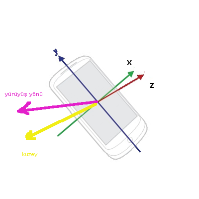
Güzel, şimdi pusula ve yürüyüş vektörlerini kullanarak kuzeye göre gidiş yönünü bulalım. Üstteki vektörlerin üç boyutlu olduğuna dikkat, eğer yürüyüş yönü ve kuzey vektörü arasında direk açı hesaplamaya uğraşsak, diyelim biri çok yukarıda diğeri çok aşağıda ama yeryüzü bazında doğu-batı temelli çok az farklı olan iki vektör arasında çok büyük açı ortaya çıkabilirdi. Bize aslında gereken sadece kuzeye göre nasıl hareket ettiğimizi verecek "yataysal" bir açı. Şimdi işimizi kolaylaştıracak bir yeni kavramı daha kullanabiliriz: yerçekim vektörü.
Yerçekim ivmeölçerler tarafından sürekli kaydedilir, yerçekimi müthiş bir kuvvettir, 9.8 $m/s^2$ ile sürekli üzerimizde etkisi var. Bunun iyi tarafı telefonlar bu kuvveti, ve onun yönünü bir vektör olarak güvenilir bir şekilde hesaplayabilirler. Hatta Android'in bu vektörü ivme verisinden çıkartan bir "türevsel algılayıcısı" bile var. Yerçekim vektör algılayıcısı (gravity vector sensor) hızlı bir şekilde bu hesabı veriyor. Telefon hangi konumda olursa olsun yerçekimin, yine telefon kordinatlarına göre, hangi yönde olduğunu gösteriyor.
Yerçekim vektörünün faydası şurada: bu vektörün normal olduğu düzlemi hayal edersek, bu üzerinde durduğumuz yeryüzeyi olacaktır! Ve, eğer pusula ve yürüyüş yönü vektörlerini bu düzlem üzerine yansıtırsak, artık bu iki vektör arasındaki açıyı bulmak çok basittir. Yansıtma için bkz [6]. Açı hesabı için iki vektor arasındaki şu ilişkiyi hatırlayalım,
$$ \cos \theta = \frac{u \cdot v}{||u||||v|||}$$
Açı için,
$$ \theta = \arccos \frac{u \cdot v}{||u||||v|||}$$
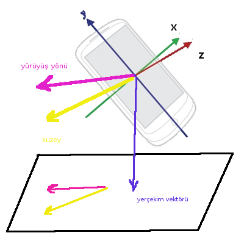

def proj(u, n):
return u - (np.dot(u,n) / np.dot(n,n)) * n
dfmag = pd.read_csv(dir + 'mags.txt',header=None,sep='\s+')
dfmag = np.array(dfmag)
dfmag = dfmag[fr:to,1:].mean(axis=0)
print u'kuzey yönü', dfmag
dfg = pd.read_csv(dir + 'grav.txt',header=None,sep='\s+')
dfg = np.array(dfg)
dfg = dfg[fr:to,1:].mean(axis=0)
print u'yerçekim vektörü', dfg
pmag = proj(dfmag, dfg)
print u'kuzey vektörü yeryüzeyinde yansıtma sonrası'
print pmag
pwdir = proj(direction, dfg)
pwdir = pwdir / lin.norm(pwdir)
print u'yürüyüş yönü yansıtma sonrası'
print pwdir
a = np.arccos(np.dot(pwdir, pmag) / (lin.norm(pwdir)*lin.norm(pmag)))
print u'Açı', np.rad2deg(a)
print u'Açı 180 den az mi?', np.dot(dfg, np.cross(pmag, pwdir)) > 0
kuzey yönü [-41.02575884 16.51051212 -2.29159006]
yerçekim vektörü [ 0.70329063 3.60535991 9.0586454 ]
kuzey vektörü yeryüzeyinde yansıtma sonrası
[-41.098733 16.13641625 -3.23152448]
yürüyüş yönü yansıtma sonrası
[ 0.30343773 -0.89316924 0.33192509]
Açı 129.15898241
Açı 180 den az mi? True
Bu yön hakikaten doğru, ölçüm alırken aşağı yukarı o yönde yürüyorduk.
Not: 180 dereden azlık irdelemesinin mantığı için bkz [6].
Üstteki kodun kullandığı yardımcı kodlar alttadır,
# http://github.com/sage-bionetworks/mhealthx baz alinmistir
import pandas as pd
import numpy as np
import matplotlib.pyplot as plt
from scipy.fftpack import rfft, fftfreq
from scipy.signal import butter, lfilter
def crossings_nonzero_pos2neg(data):
# sifir gecislerini burada hesapla
pos = data > 0
crossings = (pos[:-1] & ~pos[1:]).nonzero()[0]
return crossings
def butter_lowpass_filter(data, sample_rate, cutoff=10, order=4):
nyquist = 0.5 * sample_rate
normal_cutoff = cutoff / nyquist
b, a = butter(order, normal_cutoff, btype='low', analog=False)
y = lfilter(b, a, data)
return y
def compute_interpeak(data, sample_rate):
freqs = fftfreq(data.size, d=1.0/sample_rate)
f_signal = rfft(data)
imax_freq = np.argsort(f_signal)[-2]
freq = np.abs(freqs[imax_freq])
# tepe noktalari arasindaki veri nokta sayisi
interpeak = np.int(np.round(sample_rate / freq))
return interpeak
Görüldüğü gibi bu hesap çok hassas ölçümlere dayanarak yapılmadı. Yürüyüş yönü için [1] araştırması veride yürüyüşün en çok iz bıraktığı bölgeye odaklanıyor, ve gürültüyü eleyip belli kesitler çıkartarak bir ortalama alıyor. Bu sağlam bir hesap. Pusula ölçümleri için de yaklaşım öyle, telefondan telefona, markadan markaya göre bir eksendeki ölçüm 20 mikrotesla yerine 40 mikrotesla gelebilir, fakat bu tür bir fark hesapta savrulma yaratacaksa yaklaşımımız sağlam değil demektir. Fakat hesaplar vektörsel, ama ölçümdeki değişiklik, hata her ne ise, tutarlı ise vektörün tüm öğelerinde mevcut olacaktır, ve vektörün yönünde değişiklik olmayacaktır. Vektörler, düzlemler, tek açılar ile iş yaparak, tek bir amaca odaklı algılayıcıların verisine güvenerek ve onları bir araya getirerek işimizi kolaylaştırmış olduk.
Önemli bir diğer özellik üstteki yaklaşım telefon hangi konumda olursa olsun işlemesi. Bu çok faydalı çünkü telefon cebimizde, çantada herhangi bir şekilde duruyor olabilir, fakat şimdiye kadar gördüğümüz tüm vektörleri hesapladığımız anda kuzeye referanslı hangi yönde yürüdüğümüzü kolaylıkla bulabiliriz.
Kaynaklar
[1] Roy, WalkCompass: Finding Walking Direction Leveraging Smartphone's Inertial Sensors, http://scholarcommons.sc.edu/etd/2352/
[2] Roy, I am a Smartphone and I can Tell my User's Walking Direction, http://synrg.csl.illinois.edu/papers/walkcompass.pdf
[3] Google, Position Sensors, https://developer.android.com/guide/topics/sensors/sensors_position.html
[4] Daskalov, A Pedometer in the Real World, http://www.aosabook.org/en/500L/a-pedometer-in-the-real-world.htm
[5] Bayramlı, Algılayıcı Ölçümleri, Video, Android, https://burakbayramli.github.io/dersblog/sk/2017/02/algilayici-olcumleri-video-android.html
[6] Bayramlı, Lineer Cebir, Ders 15